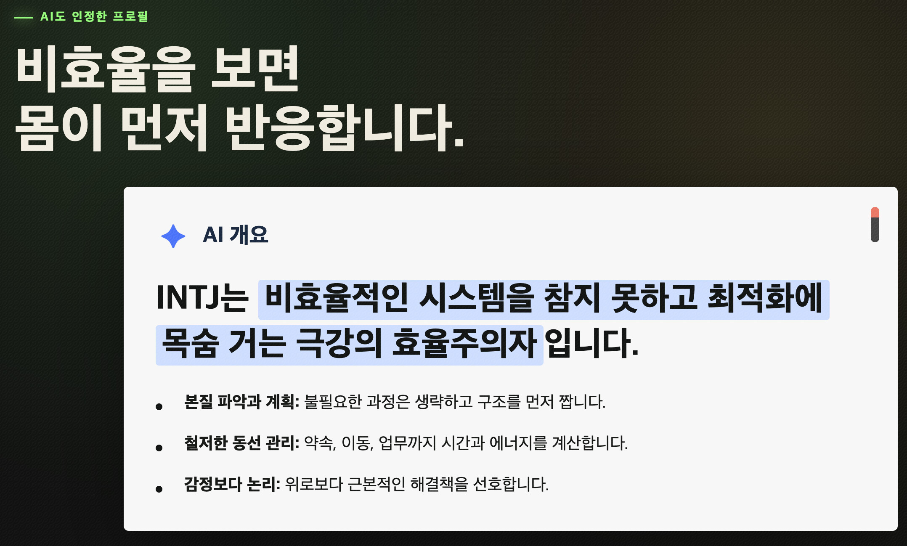
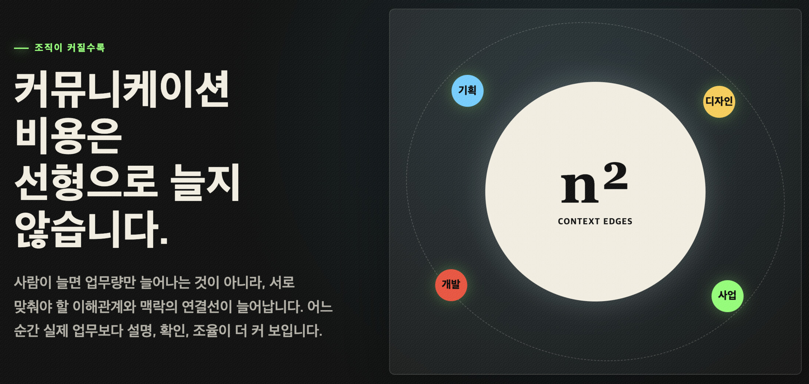
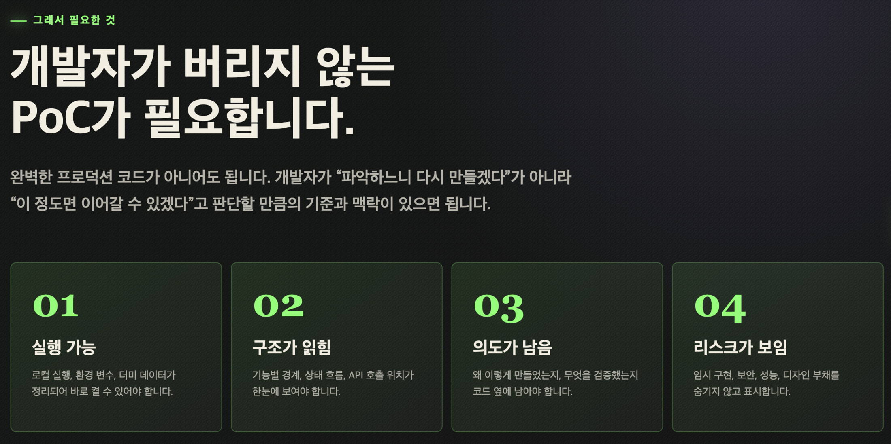
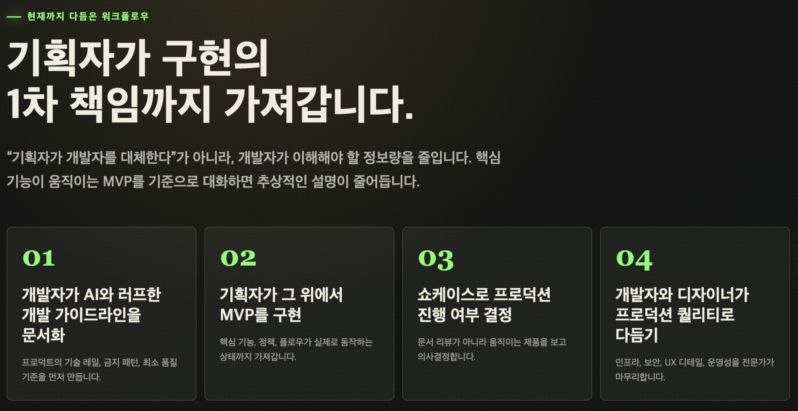
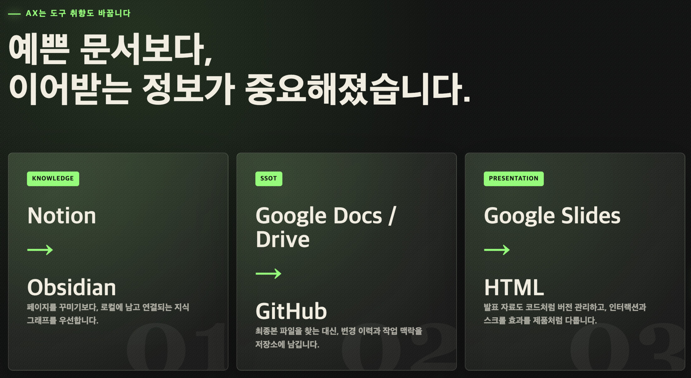

김강수 대표는 두 차례 게임 회사를 창업했고, 두 회사 모두 매각에 성공했다. 수집형 모바일 RPG 게임의 장을 연 <드래곤 빌리지>의 프로듀서로 일했으며, 이 회사는 퇴사 후 '해긴'에 매각되었다. 이후 블록체인 게임 개발사 '제트5'를 창업하여 상장사 '넥써스'에 매각했다. 현재는 넥써스 전체의 AX와 다양한 플랫폼 사업을 총괄하고 있다.
비효율을 못 참는 INTJ
제가 발표할 주제는 "AX 시대를 INTJ가 즐기는 법"입니다.
INTJ는 AI도 인정했듯이, 비효율적인 시스템을 참지 못하고 최적화에 목숨을 건 완벽주의자입니다. 저는 와이프랑 결혼하기 전에, 데이트 장소도 거리 동선 효율을 고려해서 잡았어요. 집에 데려다줄 때도 "이렇게 하면 내가 비효율적이잖아"라는 말을 몇 번 했고, 그때마다 "아, 너무 기계적이야" 이런 평가를 들었죠.

하지만 지금은 AI가 사업의 효율을 극대화할 수 있는 시대입니다. 특히 큰 조직을 이끌어야 할 때는 더욱 도움이 되지요.
조직의 비용은 프로덕트가 아닌 커뮤니케이션에서 온다
커뮤니케이션 비용은 조직이 커지면서 선형적으로 늘지 않고 기하급수적으로 늘게 됩니다.
저는 조직을 꾸릴 때 회사의 자리 배치부터, 누가 어디에 어떻게 앉아야 하는지를 신경 씁니다. '서로 말을 가장 많이 하는 사람들은 마주 보고 있어야 한다'라는 기준으로 사람들을 배치하거나 했는데요. 물리적인 거리가 멀어지면, 커뮤니케이션 비용이 같이 늘어나기 때문입니다.
그래서 저는 조직의 AX에 있어서도 '어떻게 커뮤니케이션 비용을 낮출 수 있을까'에 집중했습니다. 극단적으로는 '서로 같이 일하는 사람들끼리 대화하지 않고도 정확하게 일할 수 있을까?'라는 고민을 했지요.
기획자, 디자이너, 개발자가 함께 일하는 IT 직군을 예시로 들겠습니다. 기획자가 문서를 작성하고, 디자이너가 목업을 만들고, 개발자는 그걸 잘게 쪼개서 린하게 프로덕트를 만듭니다. 그리고 기획자가 또 뭔가 다른 걸 바꿨다고 얘기하면, 디자이너가 또 고치고, 개발자가 또 수정하고, 이런 커뮤니케이션들이 계속 반복됩니다.

조직이 커지면 '이게 일을 하고 있는 건지, 하루 종일 회의를 하고 있는 건지' 구분이 안 될 만큼, 점점 소통하는 시간들이 늘어나게 됩니다.
프로덕트 뿐만이 아닙니다. 제품이 나오고 나서 PR 팀에서 "홍보를 해야 됩니다"라고 하면, "제품에 대해서 설명 한번 해 주세요"하고 또 회의를 잡아야 합니다. 그런 작업 방식들을 AI가 어떻게 해소할 수 있을지, 저희는 일찍부터 다양한 시도를 했습니다.
초기에는 이랬습니다. 기획자가 처음부터 PoC(개념 증명), MVP(최소 기능 제품)를 만들어 버립니다. GPT라든가 클로드라든가 AI와 기획 관련 얘기들을 나누며, PRD(제품 요구사항 문서)를 뽑아달라고 하는 거죠.
이 PRD를 가지고 피그마 메이크에 들어가서 AI에게 목업을 만들어달라고 합니다. 그 목업을 기반으로 기획자가 또다시 클로드한테 일을 시키고, 제대로 동작하면 기뻐하며 '이제 이 상태로 구현만 하면 되겠지' 하며 개발자한테 넘겨줍니다.
아, 이건 못 써요. 다시 기획서랑 피그마 디자인 주세요.
그런데 개발자는 코드 베이스를 훑어보고서는 다시 닫아버립니다. 그리고 다시 해달라 하죠. 기획자는 답답합니다. "이걸 왜 못하죠? 제가 다 만들어 놨는데, 잘 동작하잖아요?"라고 하죠. 하지만 개발자의 시각에서는 어디까지나 임시로 만든 작업물일 뿐, 제품화하려면 다 뜯어서 새로 해야 하는 경우가 많죠.

에이전트가 사내의 모든 커뮤니케이션을 기록하고 정리해서, 모두가 같은 상황을 공유한다
에이전틱 디벨롭먼트 프레임워크는 별 게 아닙니다. 그냥 에이전트에게 우리 회사와 프로덕트 전체의 맥락을 이해시키는 거예요.
그래서 저희는 요즘 많이들 이야기하는 '에이전틱 디벨롭먼트 프레임워크(Agentic Development Framework)'를 활용했는데요. 말은 굉장히 어려운데 사실, AI 에이전트한테 텍스트로 설명, 지시문들을 넣어놨다는 거예요.
"너(AI)는 이 프로젝트를 개발할 때 이런 행동들을 하면 안 돼", "너는 우리가 프로덕션 코드 베이스에 맞게 개발하는 규칙을 지켜가면서 코드를 짜야 돼", 이런 것들을 체계화하는 거죠.
이를 위해서는 먼저 개발자와 기획자가 함께 '구조화된 개발 가이드라인'을 만들어야 합니다. "우리 프로젝트가 앞으로 크면 이런 식으로 될 것 같으니까 미리 이런 걸 감안하고 만들어줘"라고 텍스트로 가이드라인을 만드는 거죠.


기획자가 PoC, MVP 단계의 제품을 만드는 건 그 다음입니다. 가이드라인을 가지고 있는 에이전트와 함께 만드는 거죠. 그 MVP 단계의 제품을 개발자와 디자이너가 넘겨받아, 코드에 문제가 없는지 확인한 후 제품 개발에 들어가는 과정으로 넘어갑니다.
이거 녹음해놨어? 내기 한번 할까?
이 과정 안에서도 여전히 사람들이 대화를 해야 되는 일들이 굉장히 많았어요. 제품이 복잡해질수록 미스커뮤니케이션도 늘어납니다. 나는 정확하게 전달했다고 생각했는데, 상대방은 다르게 이해하는 경우가 많죠. 그러다 보면 책임 소재 따지며 갈등이 커지고는 했습니다.
이를 해결하기 위해 "우리가 회의하는 것도 다 녹음하고 기록하자"는 문화가 생겼습니다. 그리고 이를 AI 에이전트에게 학습시킵니다. 기존의 회의록은 서로 책임을 명확히 하기 위해 존재했다면, 이제는 서로의 오해를 막고 정확하게 소통하기 위해 녹음을 하는 거죠.
회의록 녹음을 에이전트에 전달하면, 작업 맥락을 전부 담을 수 있게 됩니다. 그러면 구성원 모두가 에이전트에게 물어보며, 모두가 같은 맥락을 공유하게 됩니다. 그리고 누구는 차트로, 누구는 테이블로, 누구는 인터랙티브한 뷰어로, 상황에 맞춰서 각자 원하는 방식으로 뽑아서 볼 수 있게 됩니다.
사람이 아닌, AI가 이해하기 좋은 툴로
이 과정 안에서 저희가 배웠던 건, 기존에 굉장히 좋다고 이용했던 툴들을 점점 바꿔 나가야 된다는 걸 깨달았습니다. 왜 그러냐 하면 기존에는 사람이 쓰기에 좋은 툴들을 이용했었는데요.
앞으로는 점점 사람이 아닌, AI 에이전트가 이해하기 좋은 툴들을 사용해야 하는 거예요.
그래서 잘 쓰고 있던 노션을 옵시디언으로 바꾸고, 구글 독스·드라이브 같은 것들을 깃헙으로 바꿨습니다. 지금 발표 자료도 HTML로 만들어져 있는데, 더 이상 구글 슬라이드는 쓰지 않습니다. 모두 다 HTML 파일로 발표 자료를 만드는 걸로 바꿔나갔습니다.

그러면서 동시에 회사 내에 있는 지라, 슬랙, 깃헙, 구글 이메일, 캘린더 등등, 우리가 회사를 운영하면서 소통하고 있는 정보들을 다 한 군데에 담아 놓습니다. 이렇게 되면 에이전트는 우리가 무슨 일을 하고 있는지, 그리고 제 팀원들이 누구고 제가 담당하고 있는 일감이 무엇인지를 다 학습하게 되죠.
지금 뭐하고 있어요? 진행 사항 정리해서 보고서로 주세요.
예전 같았으면 보통은 이런 걸 누군가에게 물어보죠. 지금 저희가 본사 인원이 140명인데요. 이런 대화들을 계속하다 보면, 하루에 낭비해야 되는 시간이 굉장히 많았습니다. 지금은 다른 부서에 뭔가를 물어보기 위해서 회의를 잡는 일들이 점점 사라지고 있습니다.
제가 궁금해하는 주제를 구독하면, 구독한 내용에 대해서 에이전트가 아침마다 저에게 피드를 줍니다. 혹은 제가 "지금 당장 정리해줘"라고 시켜도 되죠. 사람끼리 슬랙으로 물어보며 시간 뺏기지 않고, 그 답변을 사람이 아닌 에이전트가 대신 답변할 수 있게끔 하는 거죠.
'AI 네이티브 개발'은 에이전트를 동료로 생각하는 것
이 모든 과정은 '커뮤니케이션 비용을 줄여야겠다'는 생각으로 시작했는데요. 지금까지 말씀드린 건 '사람과 사람의 커뮤니케이션 비용을 어떻게 줄이냐'였고요. 개발에 있어서는 '사람과 에이전트의 소통도 줄여야 한다'고 생각합니다.
AI 네이티브한 개발 방식이란, 개발에 있어서 에이전트가 점점 더 많은 권한을 가져가는 겁니다. 기존에는 에이전트가 뭔가를 만든다라고 하면 일단 의심하고 봤어요. 근데 점점 모델이 발전하다 보니까 "AI가 나보다 정확할 수 있어"라고, AI 쪽으로 점점 더 신뢰가 커지는 방식입니다.
AI가 짠 코드는 내 동료가 코드를 짠 거야. 내 동료가 코드를 짰다면 어느 부분에서는 실수할 수도 있는 거지.
이제 저희는 에이전트를 동료라고 생각하고, 함께 코드 리뷰를 하고 있습니다. 저희가 최근 'AI 컴패니언 채팅 서비스' 프로젝트를 진행했는데요. 35만 줄 정도의 코드를 20일 안에 코딩했습니다.
예전 같으면 진짜 상상할 수도 없는 일이거든요. 과거에는 여러 명의 팀원들이 기획하고, 버튼의 위치와 색상 등 각각의 UI를 픽셀 단위로 정하고 있었어야 한다면, 지금은 그런 작업들을 대부분 다 AI에게 맡겨버립니다.
책임과 경계를 명확히
정리하면, 소통의 효율을 높이는 방법은 '각자가 알아야 할 정보량을 줄이기'라고 생각합니다. 기존에는 기획자가 개발자로부터 결과물을 받았을 때, 내가 기획했던 내용이 잘 구현돼 있는지를 계속 확인해야 했습니다.
이제는 기획자가 이미 구현해서 넘기기 때문에, 더 이상 개발자한테 "그 기능 넣었어요?"라고 확인할 필요가 없습니다. 대신 이를 넘겨받은 개발자는, 그 기능들이 안전하게 동작하는지, AI가 작업한 코드들이 이후에 우리가 어떤 기능들을 추가했을 때 스케일러빌리티(확장성)를 확보한 것인지를 검수하는 거죠.
내가 이렇게 작업해도 괜찮아? 내가 이 코드를 다 이해하지 못했는데 코드에 대한 책임은 누가 지는 거지?
다만 저희도 아직 실험하는 와중에 여러 문제들을 겪고 있습니다. 제가 이끌고 있는 조직들은 제가 강하게 밀어붙여서 도입을 하고 있습니다만, 여전히 다른 조직에서는 거부감이 많이 있는 상황입니다. 여전히 많은 개발자들은 이렇게 작업해도 되는지 죄책감을 갖고 있지요.
괜찮아, 이런 책임이 더 이상 개발자 혼자에게 있는 게 아니야. 우리는 다같이 AI로 일하는 조직이야.
그래서 책임과 경계의 정리가 명확하게 이루어져야 되고, 무엇보다 개발자한테 책임을 떠넘기지 않아야 하는 문화가 중요합니다. 코딩이 더는 개발자만의 일이 아닙니다. AI와 함께 모두가 함께 제품에 문제가 없는지 검수하는 조직이 되어야 하는 거죠.
이 부분에 있어서는 앞으로 더 많은 테스트와 대화가 필요할 것입니다. 발표 마치겠습니다. 감사합니다.